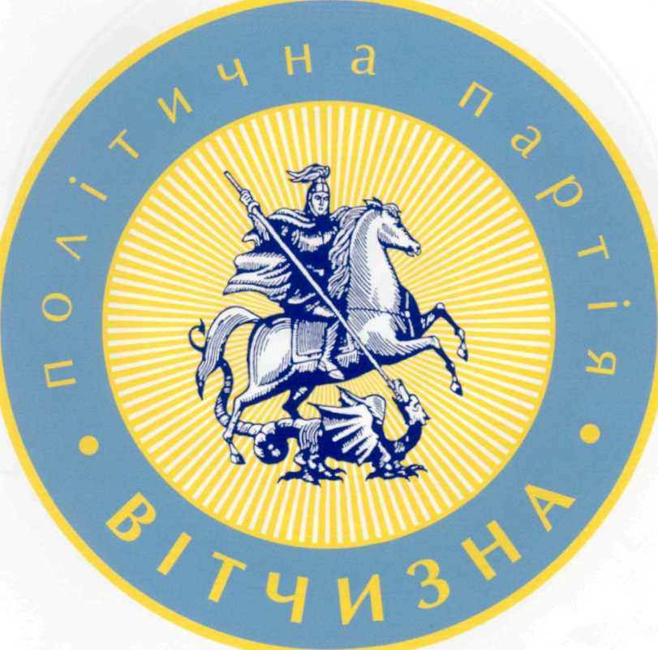
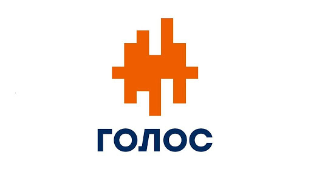

Повернутися на головну сторінку
Біографія Сергія Притули
Графік зустрічей з виборцями
Список політичних сил


Велика кількість політичних сил підтримують кандидатуру Сергія Притули на пост Президента України.Серед них є такі відомі політичні партії як:"Голос", "Вітчизна" та інші.